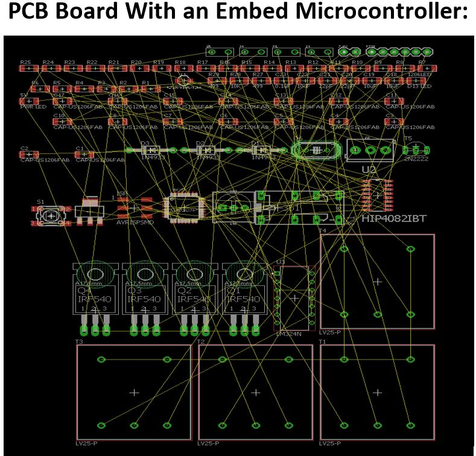
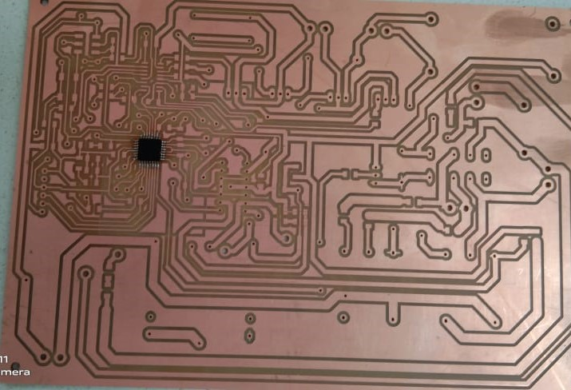

|
MICRO INVERTER PROJECTINSTRUCTOR: SIR ASIM ALI SAMEJO |
|---|
| Routing was the biggest challenge of our project. It was so complex that most of the time we spent while doing routing. There were three IC’s (microcontroller, hip4082 and LM324) interconnected to each other and the four sensors (two current sensors and two voltage sensors) along with “Arduino Board” circuitry. It was a tough job to route them on a single layer (approximately impossible). There were many overlaps. Consequently we decided to make two layers PCB board. After a very hard work we succeeded in making the final PCB board. |
|  |
| When we had completed routing and milling of our circuit then we were supposed to solder the components on PCB milled board. There were few problems that we faced in soldering. There are two types of components SMD (surface mounting devices ) and DIP (Dual in-line Package) .SMD has terminals with external pins and they are supposed to be mounted on surface of PCB circuit and they are usually very small in size and hard to solder because of size so soldering those components were hard but we were taught how to solder those components and we did so nicely. But there few components which we had selected in SMD packages and we expected we will receive those components in SMD but unfortunately those components were not in |
|  |
| our Fablab’s inventory and there were insufficient place for those components because usually SMS are smaller than DIP but finally we solved those issues by soldering DIP components instead of SMD but with a lot of struggles and hit trial method. When we got our PCB printed circuit we thought it is completely accurate one but due lack of experience there were some paths which were short and they were not supposed to be short then we tackle this problem by heating and insulating paths from each other. |
| We had transformer in our project and it was of large size and there was not enough place for that so them we decided to keep transfer outside of circuit and we just connected to sides(input and output) to connectors which solved the issue of lack of space . |
| We had transformer in our project and it was of large size and there was not enough place for that so them we decided to keep transfer outside of circuit and we just connected to sides(input and output) to connectors which solved the issue of lack of space . solve this problem but finally we came to know that one of the resistor was burnt and at that place circuit was open and we just replaced tat resistor which solved the issue. Some components were missing like inductor and dual voltage booster etc. we ordered from online sources but due to coivd-19 pandemic we hadn’t enough time to wait for so there was issue for HIP IC because it needed 12 voltage and operational amplifiers were requiring 15 volt positive and negative but there was no dual voltage supply for that then there was device which had capability of producing positive and negative voltage of out range then we used that device only for testing purpose. We required inductor of 48mH but there was inductor of only 2.2mH in our inventory and we were not supposed to wait for online order so we went with 2.2mH inductor which really effected our results. VIAs are used to create the connection between two layers of PCB circuit and we used many vias because to avoid overlapping .When we checked circuit there was open path then we used continuity test to find missing connection and we were succeeded that some of vias were not connected then we soldered them correctly. |
| There are some precautions to avoid soldering problems. Always read component datasheet before soldering if their tolerating range of heat in beyond the soldering heat of your soldering machine then you can use because sometimes it can’t sustain that much heat that you are giving and they burn and after soldering your circuit doesn’t give your desired output because VIAs are used to create the connection between two layers of PCB circuit and we used many vias because to avoid overlapping .When we checked circuit there was open path then we used continuity test to find missing connection and we were succeeded that some of vias were not connected then we soldered them correctly. There are some precautions to avoid soldering problems. Always read component datasheet before soldering if their tolerating range of heat in beyond the soldering heat of your soldering machine then you can use because sometimes it can’t sustain that much heat that you are giving and they burn and after soldering your circuit doesn’t give your desired output because the component is burnt which means absent from circuit and you are unable to find error. Always measure components values before soldering because sometimes values don’t match with datasheet values so it will create issues for you and will create issues in working of circuit. Measuring values before soldering will help circuit to work correctly and you will not dissolder those components again and again. Always use continuity test after soldering because components may be short which is more than enough to destroy your circuit and you don’t know so if it occurs then you can solve on the spot. Sometimes we see by naked eyes that components are connected to each other but they are not so te circuit is open which creates many problems. continuity test gives sound(beef) if they are connected otherwise you have to solder them correctly. |